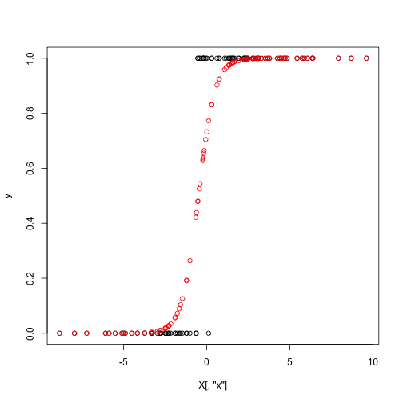
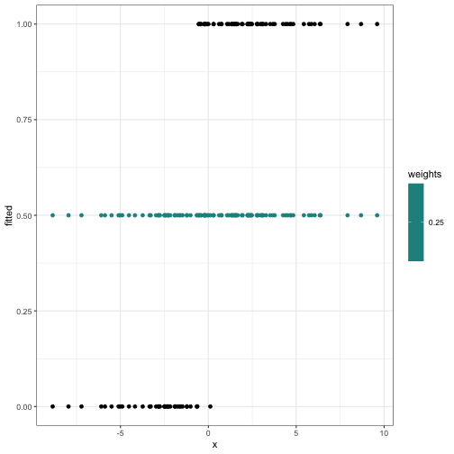
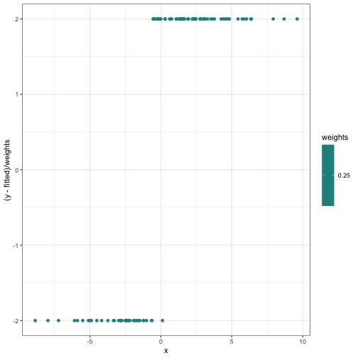
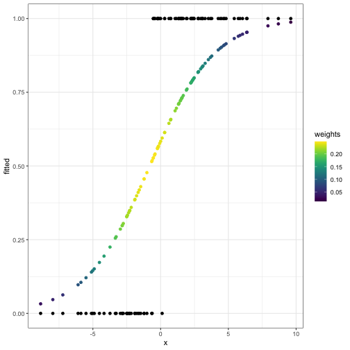
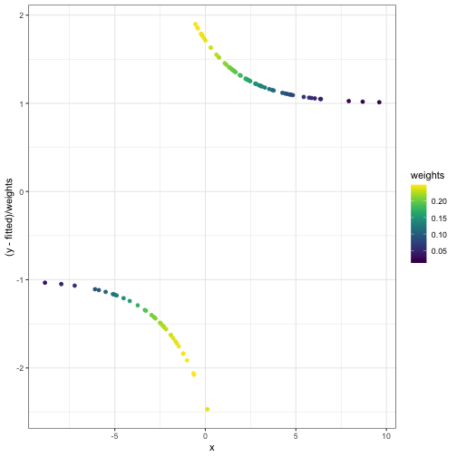

Agenda today
Newton’s method for multivariate problems
Generalized linear models and exponential familiies
Iteratively reweighted least squares for maximum likelihood in generalized linear models
Newton’s method:
Pick some starting value \(\theta^{(0)}\)
Iterate: \(\theta^{(m+1)} = \theta^{(m)} - d^2 \ell(\theta^{(m)}) d \ell(\theta^{(m)})\)
Stop when \(d\ell(\theta^{(m)})\) is sufficiently close to 0.
Linear regression model:
Likelihood: \[ L(\theta) = (2\pi)^{-n/2} \sigma^{-n}\exp(-(y - X\theta)^T (y - X\theta) / 2) \]
Log likelihood: \[ \ell(\theta) = -n \log(2\pi) / 2 - n \log \sigma - (y - X \theta)^T (y - X \theta) / 2 \]
\(d\ell(\theta)\): \[ X^T (y - X \theta) \]
\(d^2 \ell(\theta)\): \[ -X^T X \]
Newton step: \[ \begin{align*} \theta^{(1)} &= \theta^{(0)} - d^2 \ell(\theta^{(0)})^{-1} d \ell(\theta^{(0)})\\ &= \theta^{(0)} - (-X^T X)^{-1} X^T(y - X \theta^{(0)}) \\ &= \theta^{(0)} + (X^T X)^{-1} X^T y - (X^T X)^{-1} X^T X \theta^{(0)} \\ &= (X^T X)^{-1} X^T y \end{align*} \]
Logistic regression model:
Likelihood: \[ L(\theta) = \prod_{i=1}^n p_i^{y_i} (1 - p_i)^{1 - y_i} \]
Log likelihood: \[ \begin{align*} \ell(\theta)&= \sum_{i=1}^n (y_i \log p_i + (1 - y_i) \log(1 - p_i)) \\ &= \sum_{i=1}^n (y_i x_i^T \theta - \log(1 + \exp(x_i^T \theta))) \end{align*} \]
First derivatives: \[ \begin{align*} d\ell(\theta) &= \sum_{i=1}^n \left(y_i x_i - \frac{\exp(x_i^T \theta)}{1 + \exp(x_i^T \theta)} x_i\right) \\ &= \sum_{i=1}^n (y_i - p_i) x_i \\ &= X^T (y - p) \end{align*} \]
Second derivatives: \[ \begin{align*} d^2 \ell(\theta) &= -\sum_{i=1}^n p_i(1 - p_i) x_i x_i^T \\ &= -X^T W X \end{align*} \] if \(W = \text{diag}(p_1(1 - p_1), \ldots, p_n(1 - p_n))\)
Newton step: \[ \begin{align*} \theta^{(m+1)} &= \theta^{(m)} - (d^2 \ell(\theta))^{-1} d \ell(\theta) \\ &= \theta^{(m)} + (X^T W^{(m)} X)^{-1} X^T (y - p^{(m)}) \end{align*} \]
Translate the previous two slides into R code:
log_likelihood = function(theta, X, y) {
p = exp(X %*% theta)/ (1 + exp(X %*% theta))
return(sum(y * log(p) + (1 - y) * log(1 - p)))
}
d_log_likelihood = function(theta, X, y) {
p = exp(X %*% theta) / (1 + exp(X %*% theta))
return(t(X) %*% (y - p))
}
d2_log_likelihood = function(theta, X, y) {
p = exp(X %*% theta) / (1 + exp(X %*% theta))
W = diag(as.vector(p * (1 - p)))
return(-t(X) %*% W %*% X)
}
newton_update = function(theta_start, d_log_likelihood, d2_log_likelihood, X, y) {
step = solve(d2_log_likelihood(theta_start, X, y)) %*% d_log_likelihood(theta_start, X, y)
return(theta_start - step)
}Make some example data
set.seed(1)
theta_true = c(1,2)
n = 100
X = cbind(rep(1, n), rnorm(n, mean = 0, sd = 4))
colnames(X) = c("Intercept", "x")
p = exp(X %*% theta_true) / (1 + exp(X %*% theta_true))
y = rbinom(n = n, size = 1, prob = p)
plot(y ~ X[,"x"])
points(p ~ X[,"x"], col = "red")
Perform Newton’s method for 10 iterations:
n_iter = 10
theta_start = c(0,0)
theta = theta_start
for(i in 1:n_iter) {
theta = newton_update(theta, d_log_likelihood, d2_log_likelihood, X, y)
cat(sprintf("Value of theta at iteration %i: (%.2f, %.2f)\n", i, theta[1], theta[2]))
}## Value of theta at iteration 1: (0.34, 0.42)
## Value of theta at iteration 2: (0.58, 0.81)
## Value of theta at iteration 3: (0.91, 1.31)
## Value of theta at iteration 4: (1.35, 1.95)
## Value of theta at iteration 5: (1.88, 2.76)
## Value of theta at iteration 6: (2.39, 3.66)
## Value of theta at iteration 7: (2.76, 4.40)
## Value of theta at iteration 8: (2.91, 4.73)
## Value of theta at iteration 9: (2.93, 4.78)
## Value of theta at iteration 10: (2.93, 4.78)We can check against what the glm function tells us:
## Warning: glm.fit: fitted probabilities numerically 0 or 1 occurred##
## Call: glm(formula = y ~ 0 + X, family = "binomial")
##
## Coefficients:
## XIntercept Xx
## 2.934 4.779
##
## Degrees of Freedom: 100 Total (i.e. Null); 98 Residual
## Null Deviance: 138.6
## Residual Deviance: 15.26 AIC: 19.26Look in a little more detail. Define a function that gives us \(p\) and \(W\) at an iteration:
get_fitted_and_weights = function(theta, X, y) {
p = exp(X %*% theta) / (1 + exp(X %*% theta))
W = p * (1 - p)
return(list(fitted = p, weights = W))
}What \(W\), \(p\), \(y - p\) look like starting out:
theta_start = c(0,0)
theta = theta_start
fitted_and_weights = get_fitted_and_weights(theta, X, y)
internals_df = data.frame(x = X[,2], y = y, fitted = fitted_and_weights$fitted, weights = fitted_and_weights$weights)
ggplot(internals_df) +
geom_point(aes(x = x, y = fitted, col = weights)) +
geom_point(aes(x = x, y = y)) +
scale_color_viridis()
ggplot(internals_df) +
geom_point(aes(x = x, y = (y - fitted) / weights, col = weights)) + scale_color_viridis()
Something suspicious:
##
## Call:
## lm(formula = (y - fitted)/weights ~ x, data = internals_df, weights = weights)
##
## Coefficients:
## (Intercept) x
## 0.3366 0.4212## [,1]
## Intercept 0.3365656
## x 0.4211563What \(W\), \(p\), \(y - p\) look like after the first iteration:
fitted_and_weights = get_fitted_and_weights(theta, X, y)
internals_df = data.frame(x = X[,2], y = y, fitted = fitted_and_weights$fitted, weights = fitted_and_weights$weights)
ggplot(internals_df) +
geom_point(aes(x = x, y = fitted, col = weights)) +
geom_point(aes(x = x, y = y)) +
scale_color_viridis()
ggplot(internals_df) +
geom_point(aes(x = x, y = (y - fitted) / weights, col = weights)) + scale_color_viridis()
Something suspicious:
##
## Call:
## lm(formula = (y - fitted)/weights ~ x, data = internals_df, weights = weights)
##
## Coefficients:
## (Intercept) x
## 0.2465 0.3863## [,1]
## Intercept 0.2464510
## x 0.3863167Exponential families are families of probability distributions whose densities take the form \[ f(x | \eta) = h(x) exp(\eta^T T(x) - A(\eta)) \]
\(T\) and \(A\) are known functions that describe the family.
\(\eta\) is the natural parameter.
Properties that we’ll need later:
\(E(X) = A'(\eta)\)
\(\text{var}(X)= A''(\eta)\)
“Normal” parameterization: \(p(y \mid p) = p^y (1 - p)^{1 - y}\)
Rewrite as \[ p(y \mid p) = \exp\left[ \log(p / (1 - p)) y + \log(1 - p) \right] \]
Then: \[ \begin{align*} \eta &= p / (1 - p) \\ T(y) &= y \\ A(\eta) &= -\log(1 - p) = \log(1 + e^\eta)\\ h(y) &= 1\\ \end{align*} \]
“Normal” parameterization: \(p(y \mid \mu) = (2 \pi)^{-1/2} \exp \left[ -\frac{1}{2} (y - \mu)^2 \right]\)
Rewrite as \[ p(y \mid \mu) = \frac{1}{\sqrt{2\pi}} \exp \left[ \mu y - \frac{1}{2} y^2 - \frac{1}{2} \mu^2\right] \]
Then: \[ \begin{align*} \eta &= \mu\\ T(y) &= y\\ A(\eta) &= \frac{\mu^2}{ 2} = \frac{\eta^2}{2}\\ h(y) &= \frac{1}{\sqrt{2\pi}}\exp(-y^2 / 2) \end{align*} \]
“Normal” parameterization: \(p(y \mid \mu, \sigma^2) = (2 \pi \sigma^2)^{-1/2} \exp \left[ -\frac{1}{2\sigma^2} (y - \mu)^2 \right]\)
Rewrite as \[ p(y \mid \mu, \sigma^2) = \frac{1}{\sqrt{2\pi}} \exp \left[ \frac{\mu}{\sigma^2} y - \frac{1}{2\sigma^2} y^2 - \frac{1}{2\sigma^2} \mu^2 - \log \sigma\right] \]
Then: \[ \begin{align*} \eta &= \begin{pmatrix} \mu / \sigma^2 \\ -1/2\sigma^2 \end{pmatrix}\\ T(y) &= \begin{pmatrix} y \\ y^2 \end{pmatrix} \\ A(\eta) &= \frac{\mu^2}{ 2 \sigma^2} + \log \sigma = -\frac{\eta_1^2}{4\eta_2} - \frac{1}{2} \log(-2\eta_2)\\ h(y) &= \frac{1}{\sqrt{2\pi}} \end{align*} \]
Why do we like them?
Many commonly-used distributions: normal, exponential, Poisson, binomial, multinomial, etc.
Easy to analyze
They describe the stochasticity in generalized linear models
Models for independent observations, \(y_i, i = 1,\ldots, n\)
Three components:
The canonical link is the one that maps the mean to the natural parameter. If you use the canonical link, the natural parameter will be linear in the predictors.
Normal: Canonical link is the identity: \(g(x) = x\)
Bernoulli: Canonical link is logit: \(g(x) = \log(x / (1 - x))\)
Poisson: Canonical link is the log: \(g(x) = \log(x)\)
Gamma: Canonical link is inverse: \(g(x) = x^{-1}\)
Find \(\eta_i^{(m)} = x_i^T \theta^{(m)}\), \(i = 1,\ldots, n\)
Find \(\mu_i^{(m)} = g^{-1} (\eta_i^{(m)})\)
Idea:
The problem is linear in the natural parameter space, so try to do least squares there
“Working dependent variable” is like \(y_i\) mapped to the natural parameter space.
In general, a random variable taken from an exponential family distribution will have variance that depends on the natural parameter.
The weights are inversely proportional to the variance of the working dependent variable at the current guess for \(\theta\).
Samples for which the variance should be smaller have larger weights, samples for which the variance should be larger get smaller weights
Random component: normal distribution, \(y_i \sim N(\eta_i, 1)\) (variance 1 for ease of notation, everything goes through analogously with unknown variance \(\sigma\))
Exponential family representation of the normal distribution has \(A(\eta) = \eta^2 / 2\)
Systematic component: \(\eta_i = x_i^T \theta\)
Canonical link function for the normal distribution is \(g(x) = x\), so \(\eta_i = \mu_i\)
Identity link means \(E(y_i) = g^{-1}(\eta_i) = g^{-1}(x_i^T \theta) = x_i^T \theta\)
Working dependent variable at iteration \(0\) \[ \begin{align*} z_i^{(0)} &= \eta_i^{(0)} + (y_i - \mu_i^{(0)}) d \eta_i^{(0)}/ d\mu\\ &= \mu_i^{(0)} + (y _i - \mu_i^{(0)}) = y_i \end{align*} \]
Iterative weights: \[ \begin{align*} w_i^{(0)} &= (A''(\eta_i^{(0)}) d\eta_i^{(0)} / d\mu)^{-1} \\ &= 1 \end{align*} \]
New estimate is \[ \begin{align*} \theta^{(1)} &= (X^T W^{(0)} X)^{-1} X^T W^{(0)} z\\ &= (X^T X)^{-1} X^T y \end{align*} \]
Random component: Bernoulli distribution, \(y_i \sim \text{Bernoulli}(\mu_i)\), \(\mu_i \in (0,1)\)
Systematic component: \(\eta_i = x_i^T \theta\)
Canonical link for Bernoulli is \(g(x) = \log(x / (1 - x))\), so \(\eta_i = \log(\mu_i / (1 - \mu_i))\)
Exponential family representation of Bernoulli has \(A(\eta) = \log (1 + e^\eta)\)
Quantities we will need: \[ \eta = \log (\mu / (1 - \mu)) \]
\[ d\eta / d\mu = 1/\mu + 1 / (1 - \mu) = 1 / (\mu(1 - \mu)) \]
\[ A(\eta) = \log(1 + e^\eta) \]
\[ A'(\eta) = \frac{e^\eta}{1 + e^\eta} \]
\[ \begin{align*} A''(\eta) &= \frac{e^\eta}{(1 + e^\eta)^2}\\ &= \mu(1 - \mu) \end{align*} \]
Working dependent variables: \[ z_i = \eta_i + (y_i - \mu_i) \frac{d\eta_i}{d \mu_i}\\ = \eta_i + \frac{y_i - \mu_i}{\mu_i(1 - \mu_i)} \]
Iterative weights: \[ \begin{align*} w_i &= (A''(\eta_i) (\frac{d\eta_i}{d\mu_i})^2)^{-1} \\ &= (\mu_i(1 - \mu_i) (\mu_i(1 - \mu_i))^{-2})^{-1}\\ &= \mu_i(1 - \mu_i) \end{align*} \]
Update formula:
\[ \theta^{(m+1)} = (X^T W^{(m)} X)^{-1} X^T W^{(m)} z^{(m)} \]
Notice that we can rewrite this: \[ \begin{align*} \theta^{(m+1)} &= (X^T W^{(m)} X)^{-1} X^T W^{(m)} z^{(m)} \\ &= (X^T W^{(m)} X)^{-1} X^T W^{(m)} (\eta^{(m)} + \frac{y^{(m)} - \mu^{(m)}}{\mu^{(w)}(1 - \mu^{(m)})}) \\ &= (X^T W^{(m)} X)^{-1} X^T W^{(m)} (X\theta^{(m)} + (W^{(m)})^{-1}(y - \mu^{(m)}))\\ &= \theta^{(m)} + (X^T W^{(m)} X)^{-1} X^T (y - \mu^{(m)}) \end{align*} \]
Remember Newton-Raphson for logistic regression?
Different from Newton-Raphson if you use a non-canonical link, e.g. probit regression instead of logistic regression.
Interpretation of Newton-Raphson suggests algorithms for other models.
If for some reason you are in a programming environment where weighted least squares is easy and everything else is unavailable, you can use weighted least squares to estimate GLMs.